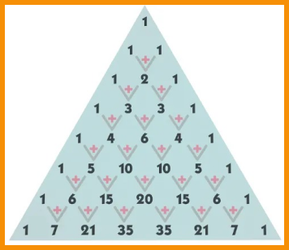
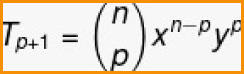
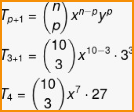
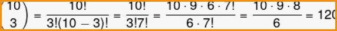

TRIÂNGULO DE PASCAL
Uma propriedade importante do binômio de Newton é a sua relação com o triângulo de Pascal. Os coeficientes dos termos do binômio de Newton são iguais aos números encontrados nas linhas do triângulo.
Com o triângulo de Pascal, torna-se desnecessário realizar o cálculo das combinações que acompanham
cada um dos termos.
Por exemplo, se o binômio for elevado a quatro, os coeficientes serão os números que aparecem na
linha quatro do triângulo de Pascal.
É importante lembrar também que, no triângulo de Pascal, começamos a contar as linhas e as
colunas a partir da linha 0 e da coluna 0. Utilizando o triângulo de Pascal, calcularemos o seguinte
binômio de Newton:
(a + b)^6
Primeiro substituímos na fórmula:
Agora, em vez de calcular cada uma das combinações, basta olhar na linha 6 do triângulo de Pascal, que é composta pelos números 1, 6, 15, 20, 15, 6, 1. Então, substituiremos cada uma das combinações para esses valores, respeitando a ordem:
(a+b)^6 = 1a^6 + 6a^5b + 15a^4b^2 + 20a^3b^3 + 15a^2b^4 + 6ab^5 + 1b^6
(a+b)^6 = a^6 + 6a^5b + 15a^4b^2 + 20a^3b^3 + 15a^2b^4 + 6ab^5 + b^6
TERMO GERAL
Algumas vezes, em vez de desenvolver todo o binômio de Newton, precisamos encontrar só um termo em específico. Para isso, existe a fórmula do termo geral do binômio de Newton.
- p+1 →termo a ser encontrado
- x →primeiro termo do binômio
- y →segundo termo do binômio
- n →expoente do binômio
Exemplo:
Dado o binômio (a+3)10, encontre o 4º termo do polinômio.
Como queremos o 4º termo, então:
p + 1 = 4
p = 4 – 1
p = 3
Além disso, temos que:
a → primeiro termo
3 → segundo termo
n→ 10
Então, substituindo na fórmula, temos que:
Calculando o binômio:
